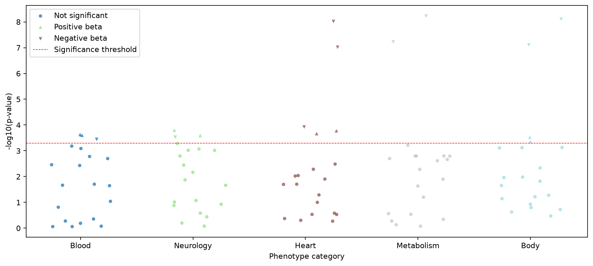
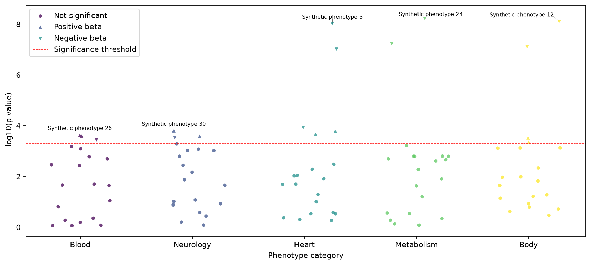
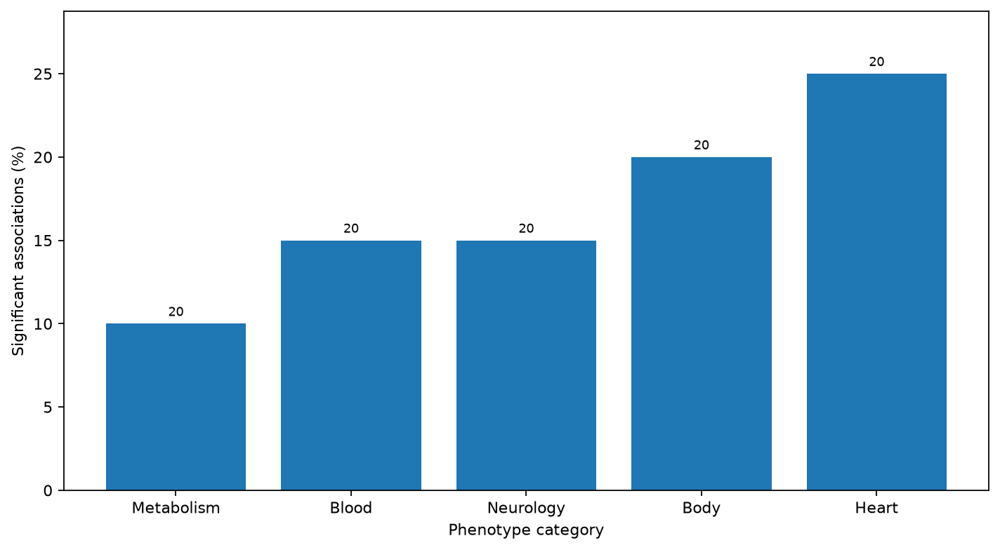
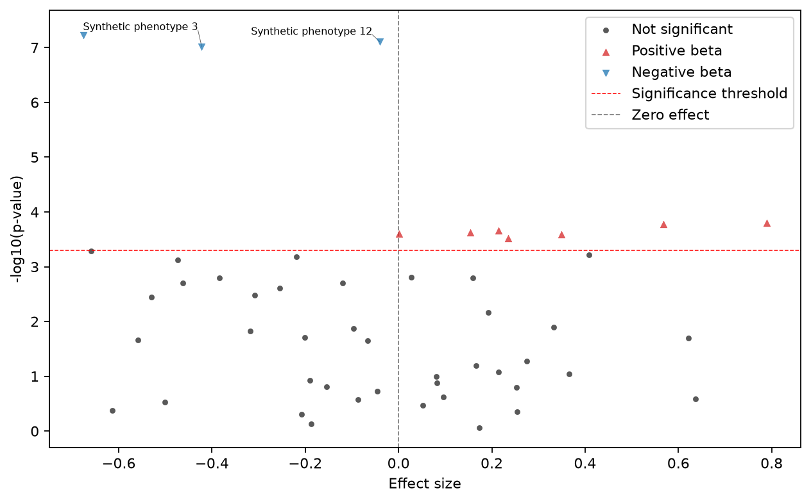

Visualization guide
Plotting guide
Prepare plotting data
Every plot uses the PheWAS result dataframe. Manhattan and enrichment plots also require a category column.
import pandas as pd
import pype
from pype.plotting import category_enrichment, manhattan, volcano
metadata = pd.DataFrame({
"outcome": ["trait_a", "trait_b"],
"description": ["Trait A", "Trait B"],
"category": ["Measurements", "Diagnoses"],
})
results = pype.add_phenotype_metadata(results, metadata)Plot gallery
{kind=link}

{kind=link}

{kind=link}

{kind=link}

Gallery data are synthetic and generated by scripts/generate_docs_plots.py.
Annotations are allocated against plotted points, plot boundaries, and significance or zero-effect reference lines. If every requested label cannot be placed without overlap, PYPE draws the collision-free subset.
Manhattan plots
manhattan(
results,
"manhattan.png",
alpha=0.05,
correction="bonferroni",
title="Phenome-wide associations",
annotate=True,
annotation_count=2,
annotation_width=24,
color_map="viridis",
seed=0,
width=12,
height=6,
dpi=200,
)| Option | Effect |
|---|---|
correction | bonferroni, sidak, fdr_bh, or no_correction. |
annotate | Add labels to the most significant rows in each category. |
annotation_count | Maximum labels per category. |
annotation_width | Maximum characters per wrapped annotation line. |
color_map | Any Matplotlib color map name. |
seed | Make horizontal jitter repeatable. |
width, height, dpi | Control output dimensions and resolution. |
Category enrichment
category_enrichment(
results,
"category_enrichment.svg",
correction="fdr_bh",
title="Significant associations by category",
width=10,
height=5,
)Use this plot to compare the fraction of tested associations that pass the selected threshold. Interpret small categories carefully because one result can produce a large percentage.
Volcano plots
paths = volcano(
results,
"volcano.png",
correction="bonferroni",
title="Predictor associations",
annotate=True,
annotation_count=5,
annotation_width=24,
width=9,
height=6,
)One image is written for each value in predictor. The returned list contains those image paths.
Additional output files
- Manhattan:
<name>_significant_results.tsv. - Volcano: one
.tsvand one image per predictor. - Category enrichment: the requested image only.
Presentation guidance
- Use SVG or PDF for publication figures that may be resized.
- Use a fixed seed when comparing versions of a jittered Manhattan plot.
- Limit annotations to the results discussed in the text.
- Report the correction method and alpha in the figure caption.
- Keep the underlying TSV output with the figure.